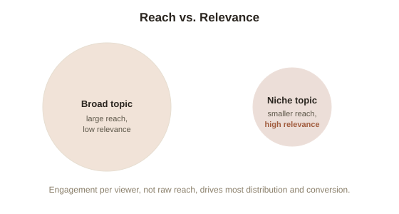

Chapter 8: The Media Flywheel
Chapter 1 named media as one of the two "permissionless" leverage types — content reaching an audience at near-zero marginal cost per additional viewer. This chapter goes deeper into how that actually compounds in practice, since "build an audience" is easy advice to give and genuinely hard to do without understanding the underlying mechanism.
The flywheel: why the first piece of content is the hardest
Media leverage compounds through what's often called a flywheel (a system where each cycle makes the next cycle easier to turn, building momentum that eventually becomes largely self-sustaining): each piece of content published can be discovered by people who already found earlier pieces, and each piece adds to a body of work that makes the creator's judgment and expertise more visibly demonstrated, which makes new potential viewers more willing to invest time in yet another piece. The first piece has none of this momentum behind it — no existing audience to reach it, no existing body of work to lend it credibility — which is exactly why it typically underperforms every later piece even when the underlying quality is similar. This is a structural fact about how the flywheel works, not a signal that the early work was bad or that the approach is wrong.
Why niches often outperform broad appeal
A genuinely counterintuitive finding across independent media (newsletters, YouTube channels, blogs, podcasts): content aimed at a narrow, well-defined audience often builds a larger, more valuable following faster than content aimed at everyone, even though the addressable audience is smaller on paper. The mechanism is relevance density: a narrow topic lets every single piece of content be highly relevant to the exact people who found it, which drives much higher engagement, sharing, and return-visits per viewer than broad content does — and engagement, not raw reach, is what most distribution algorithms and word-of-mouth actually reward. A creator covering "personal finance" broadly competes with enormous, well-resourced incumbents for a huge but shallow audience; a creator covering "personal finance for freelance graphic designers" competes with almost nobody for a smaller but far more engaged one — and that smaller, denser audience often converts into real income (subscriptions, sales, referrals) at a much higher rate.

The honest caveat: this is genuinely slow, and survivorship bias distorts how it looks from outside
The visible success stories of media leverage — a newsletter that becomes a full-time income, a channel that becomes a business — are, almost by definition, the ones that survived long enough to become visible, which badly distorts how fast and reliable the process looks from outside. Most attempts at building a media flywheel produce very little for a long stretch of consistent effort before (if ever) reaching the point where the compounding becomes obviously self-sustaining, and there's no reliable way to know in advance which specific attempt will make it through that stretch. Treating this as a fast or guaranteed path to income, rather than a genuinely slow compounding process with real attrition along the way, is the single most common and costly misreading of how it actually works.
Try this
Ideas for noticing or testing this in your own life.
- If you've ever considered building any kind of audience — a newsletter, a channel, a portfolio of public work — write down the narrowest, most specific version of that topic you can think of, rather than the broadest: relevance density, not raw addressable size, is usually the better early bet.
Worth pulling on?
A few loose threads from this chapter — if any of these genuinely grab you, that's a good sign of where to go next.
- Every form of leverage covered so far — capital, equity, debt, media — carries real risk of failure, not just risk of slow growth. → Picked up directly in Chapter 9, the honest risk chapter for this whole topic.